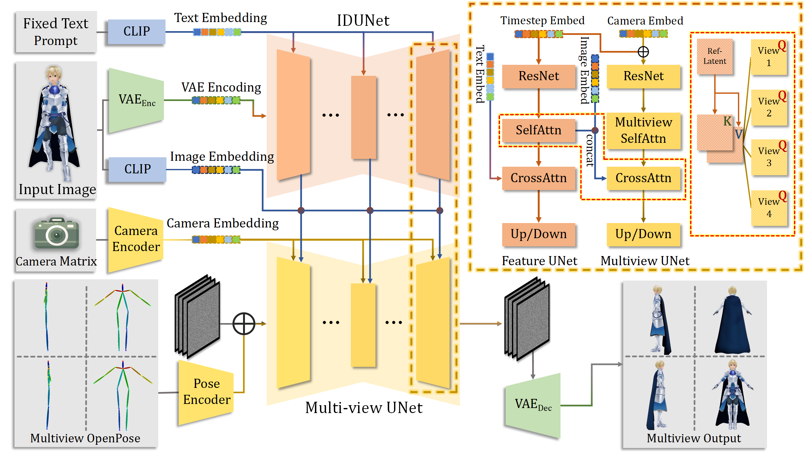
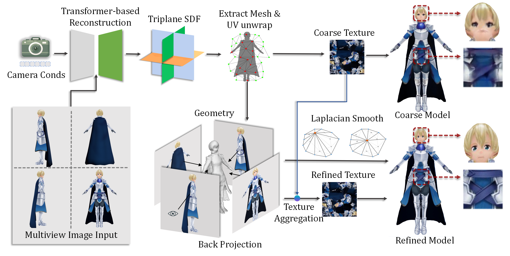
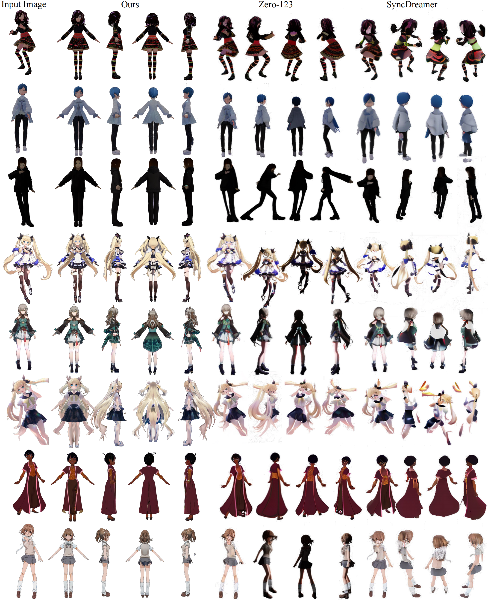

Abstract
In this paper, we present CharacterGen, a framework developed to efficiently generate 3D characters. CharacterGen introduces a streamlined generation pipeline along with an image-conditioned multi-view diffusion model. This model effectively calibrates input poses to a canonical form while retaining key attributes of the input image, thereby addressing the challenges posed by diverse poses. A transformer-based, generalizable sparse-view reconstruction model is the other core component of our approach, facilitating the creation of detailed 3D models from multi-view images. We also adopt a texture-back-projection strategy to produce high-quality texture map. Additionally, we have curated a dataset of anime characters, rendered in multiple poses and views, to train and evaluate our model. Our approach has been thoroughly evaluated through quantitative and qualitative experiments, showing its proficiency in generating 3D characters with high-quality shapes and textures, ready for downstream applications such as rigging and animation. Our code, dataset and pretrained weight will be available soon.
We show the whole pipeline above of how we generate four views of consistent images.
We show the pipeline above on how we generate final refined character meshes from generated multi-view images. In the first stage, we utilize a deep transformer-based network to generate an character with a coarse texture and then adopt our texture back-projection strategy to enhance the appearance of the generated mesh.
Our Results
Single Input Image
2D Multi-View Images
3D Character
2D Comparsion Results
3D Comparsion Results
Input Image
CharacterGen
ImageDream
Magic123